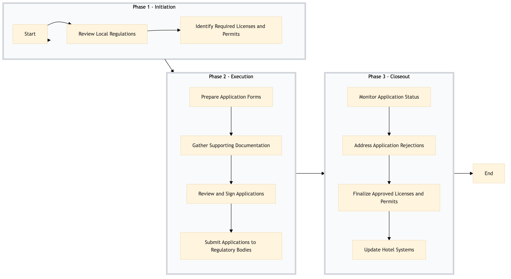

| Role | Steps |
|---|---|
| Compliance Manager | 1.1 1.2 2.1 2.3 2.4 3.1 3.2 3.3 |
| Front Desk Agent | 2.2 |
| Executive Housekeeper | 2.2 |
| General Manager | 2.3 3.2 3.3 |
| IT Manager | 3.4 |
| Step | Name | Role | System | Input | Output | KPI | Dec? | Exc? | Pain Point / Risk |
|---|---|---|---|---|---|---|---|---|---|
| 1.1 | Review Local Regulations | Compliance Manager | Oracle OPERA Cloud | Local liquor laws and regulations document | Regulatory compliance checklist | < 30 min | N | Y | Keeping up with constantly changing local regulations |
| 1.2 | Identify Required Licenses and Permits | Compliance Manager | Oracle OPERA Cloud, IDeaS G3 RMS | Regulatory compliance checklist | List of required licenses and permits | < 15 min | N | N | Accurate identification of all necessary documents |
| 2.1 | Prepare Application Forms | Compliance Manager | Oracle OPERA Cloud, Book4Time | List of required licenses and permits | Completed application forms | < 60 min | N | Y | Ensuring all information is accurate and complete |
| 2.2 | Gather Supporting Documentation | Front Desk Agent, Executive Housekeeper | Oracle OPERA Cloud, SynXis CRS | Application forms | Supporting documents bundle | < 45 min | N | Y | Collecting and organizing all necessary supporting documents |
| 2.3 | Review and Sign Applications | General Manager, Compliance Manager | Oracle OPERA Cloud | Completed application forms and supporting documents bundle | Signed application forms | < 15 min | N | Y | Ensuring all signatures are completed on time |
| 2.4 | Submit Applications to Regulatory Bodies | Compliance Manager | Oracle OPERA Cloud, Book4Time | Signed application forms and supporting documents bundle | Confirmation of submission receipt | < 30 min | N | Y | Handling delays in submission due to regulatory body systems |
| 3.1 | Monitor Application Status | Compliance Manager | Oracle OPERA Cloud, Book4Time | Confirmation of submission receipt | Application status updates | < 5 min (daily) | Y | N | Staying informed about application progress |
| 3.2 | Address Application Rejections | Compliance Manager, General Manager | Oracle OPERA Cloud, Book4Time | Application status updates | Corrected application forms and resubmission plan | < 2 hours (if rejection occurs) | Y | N | Handling rejections and ensuring timely corrections |
| 3.3 | Finalize Approved Licenses and Permits | Compliance Manager, General Manager | Oracle OPERA Cloud, Book4Time | Approved application forms | Finalized licenses and permits | < 1 hour | N | Y | Ensuring all final documents are correctly issued |
| 3.4 | Update Hotel Systems | IT Manager, Compliance Manager | Oracle OPERA Cloud, SynXis CRS | Finalized licenses and permits | Updated hotel systems with new licensing information | < 30 min | N | Y | Updating multiple systems accurately |
A structured process document for managing liquor licensing and permit management at a Marriott full-service hotel using Oracle OPERA Cloud PMS.